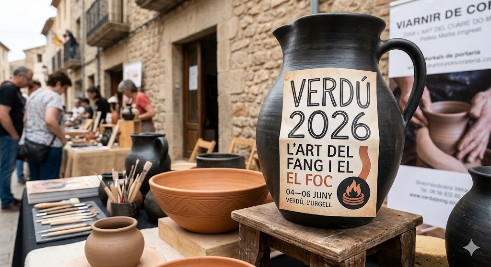

L'Ànima de la Terrissa Negra
Com el foc i l'absència d'aire dicten el destí del fang a Verdú

A les Terres de Ponent, el silenci de Verdú només es trenca pel girar del torn. Aquí, el fang no és només terra cuita; és un vestigi d'una alquímia mil·lenària que transforma l'argila vermella en un negre profund i tel·lúric.
El secret d'aquesta metamorfosi resideix en la **cocció reductora**. Quan el forn arriba als 1.000 graus, els mestres segellen les "boca" del forn amb fang fresc i brancatge verd. Aquest gest provoca una falta d'oxigen immediata; el fum, atrapat, penetra en les entranyes del fang per fixar el carboni en cada porus.
"A Verdú no coem peces, domestiquem el fum perquè pinti l'obscuritat dins de la terra."
Aquesta tècnica no és un capritx estètic. La terrissa negra és més dura, més resistent i té una sonoritat cristal·lina. El "silló" (el càntir local) és una obra d'enginyeria: la seva porositat permet que l'aigua "suï", mantenint el líquid interior a una temperatura glaciar fins i tot sota el sol més rabiós de l'agost urgellenc.
Mantenir aquest llegat no és fàcil. L'ofici s'enfronta a l'oblit, però cada nova fornada és una petita victòria contra la industrialització. Ser artesà a Verdú és una declaració d'intencions: és triar el temps lent del fang davant la pressa del plàstic.
El cànon de la peça autèntica
- El color: Un negre atzabeja que brilla com el grafit sota la llum.
- El sò: Al tocar-lo amb els artells, ha de sonar amb una nota aguda i metàl·lica.
- L'ofici: Les empremtes digitals de l'artesà han de ser visibles a l'interior, prova del seu origen manual.